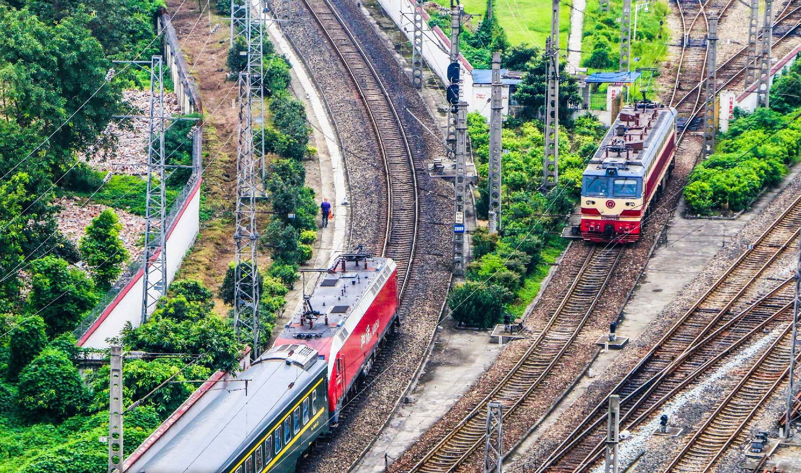
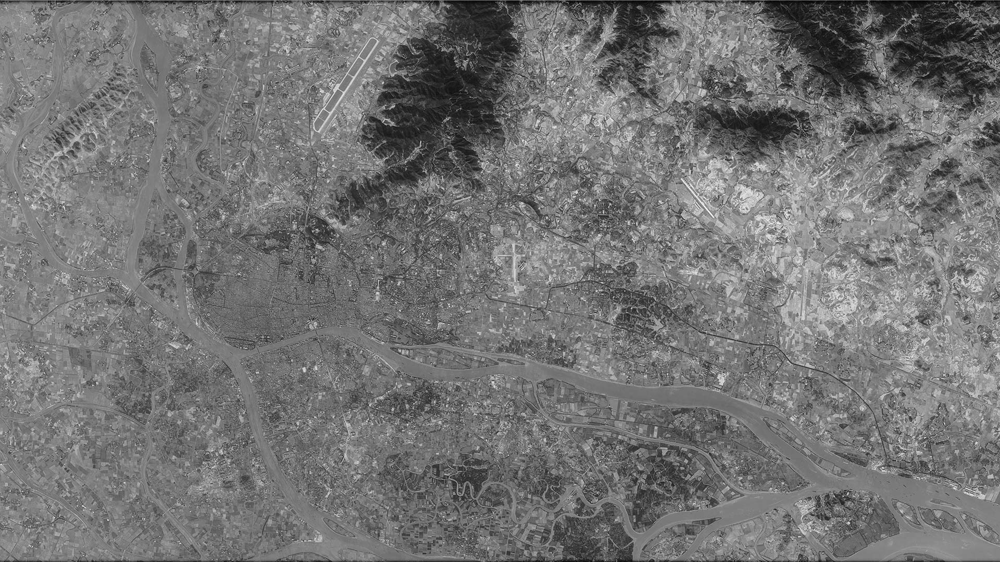
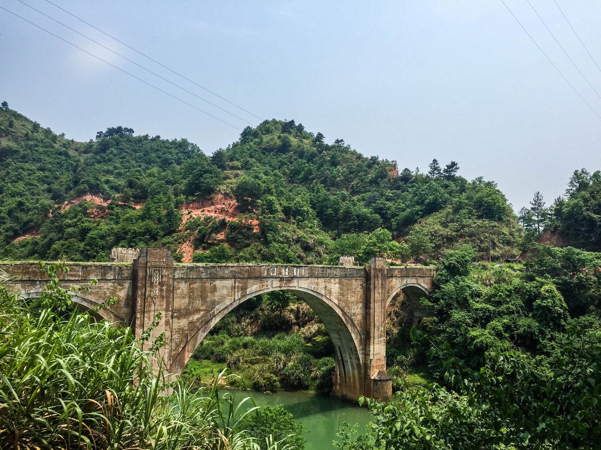

绘途计划
用轨迹
丈量每一寸远方
坐地日“行”八万里，
巧手勾勒三千程。

MapInsight
看得有多广
向往就越远
是地理，也是记忆；
是敬意，也是好奇。

寻访3.0
我来，我见
我是「寻探青年」
探索荒野痕迹，
寻回故道记忆。
城客圈 · I'm transpotter
传播铁道姿势
探讨交通美学
不仅是一个团体，
更是传承交通爱好亚文化的新生力量。
这就是同趣
不仅带你寻找交通乐趣
对铁道的爱好，是一种对悠长的时间和广远的空间的追求和信仰。
当我们行走「江湖」，驻足或是追寻，我们不仅留下足迹，更播撒对远方的期待。
「无数的远方，无数的人们，都与我有关。」换个角度说这句话，当然也通顺。虽千万里吾往矣，是时间在流淌，是空间在延伸，是心灵在远行。
同趣想做的，不仅仅是带你体验这些，还想带你感受对交通，地理，历史以及一切所爱的敬意与好奇。
同趣
是蓝鲸交通美学研究所为交通爱好者打造的一个活动集散地。
希望你在这里，纵横交通，趣由心生。
200+
交通美学研究员
12
爱好者活动站点
90+
铁道专题与地域活动
2000+
爱好者线上线下互动
蓝鲸交通美学研究所 · 城客圈「寻访」系列计划进行中！邀您为您的城市和铁道风光多留些记忆。